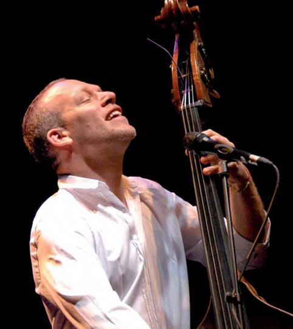
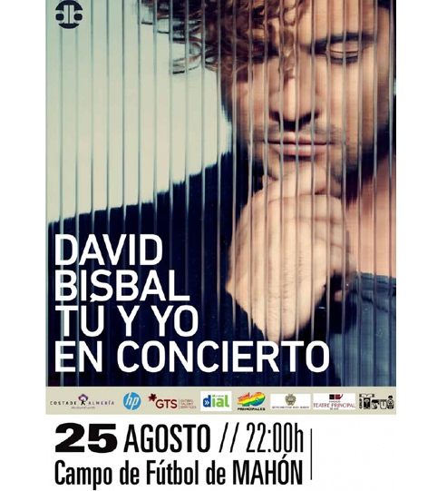

Événements - Une île cultivée
La bonne vie requiert un bon entourage, et Minorque l’a. La bonne vie exige une gastronomie de qualité, et Minorque l’a. Et la bonne vie oblige à maintenir en activité le cerveau avec une intense activité culturelle, et Minorque l’a aussi. Une île qui n’atteint pas les 100.000 habitants, organise de très nombreuses célébrations, vous n’imaginez pas combien et elles augmentent en été. Vous aurez sans doute l’occasion d’assister à une d’entre elles pendant votre séjour sur l’île.
Tout d’abord, ce petit morceau de terre possède le théâtre d’opéra le plus ancien d’Espagne, le Principal de Maó. Un espace modernisé, capable d’accueillir une grande variété d’arts scéniques et une très grande programmation qui va bien au-delà des représentations d’opéra. Vous en trouverez certainement une à votre goût. Vous trouverez à Maó un autre joyau, l’orgue de l’Église de Santa María, avec plus de 200 ans d’histoire. On y organise périodiquement des concerts, vous aurez l’occasion de découvrir que malgré le temps qui passe cet instrument n’a pas pris une ride, bien au contraire, il a le même effet que les bons vins.
En été, aussi bien à Maó qu’à Ciutadella, on organise des festivals musicaux de haut niveau. C’est les Jeunesses Musicales de ces deux villes qui les organisent, et permettent de combiner Minorque comme scène idéale avec les mélodies les plus enchanteresses.
Et si vous préférez un autre style de musique, sachez qu’en été l’île se remplit de concerts de différentes capacités, de dimensions réduites jusqu’à plus grande échelle. Vous pourrez trouver un petit concert dans le coin d’une rue ou alors sur un champ de football. Consultez la programmation afin de faire le bon choix.
Génération après génération, les minorquins ont su cultiver leurs traditions et aujourd’hui ils conservent surtout deux expressions qui font partie de l’identité de cette Île. D’un côté, les danses folkloriques, basées sur les chansons populaires de l’Île et de l’autre, les “gloses”. Cette dernière, est une discipline extrêmement compliquée, elle requiert une grande agilité mentale de la part de ceux qui la pratiquent, “les glosadors”. C’est un dialogue entre plusieurs personnes qui sur une même mélodie conversent avec l’obligation de faire rimer leurs vers d’une manière très concrète tout en conservant une métrique déterminée. Les “glosadors ”, sont de véritables maîtres linguistique. Ils jouent en catalan, venez les écouter.
Si vous aimez l’art, visitez les expositions programmées par les différents organismes culturels ou alors promenez-vous dans les nombreuses galeries de l’île. Découvrez les créations des artistes locaux. Beaucoup d’entre eux se sont fait connaître à l’étranger, sans oublier leurs origines. On porte à jamais Minorque dans notre cœur.
Vous voyez, plusieurs possibilités de découvrir la culture minorquine s’offre à vous. Souvenez-vous, c’est une île, pas seulement un morceau de terre. Minorque ne serait pas ce qu’elle est sans sa culture. Jetez-y un coup d’œil, et savourez-la!